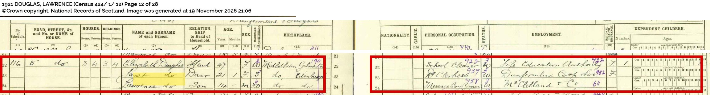

1921 census: 5 Foundry Street, Dunfermline
Census of Scotland, 1921, Dunfermline, enumeration district 12, page 12 (424/1 12). National Records of Scotland.

The entry is boxed in red and the names are highlighted. See the full page.

What it says
- Schedule 116, 5 Foundry Street, census night June 19, 1921, three rooms and four people.
- Elizabeth Douglas, head, 47, widow, born Gilmerton, Midlothian, school cleaner, Fife Education Authority.
- Janet, daughter, 21, clerkess, Dunfermline Co-operative Society.
- Lawrence, son, 14, born Edinburgh, message boy (grocer's), McClelland & Co.
- Margaret Dobson, boarder, 37 years 6 months, saleswoman, John Ross & Sons.
Why it matters
Two years after Robert Douglas died, Laurence is fourteen, out of school and working as a grocer's message boy. Grocer is the trade he gave when he sailed for America in 1929.
Crown copyright, National Records of Scotland. Image from ScotlandsPeople.